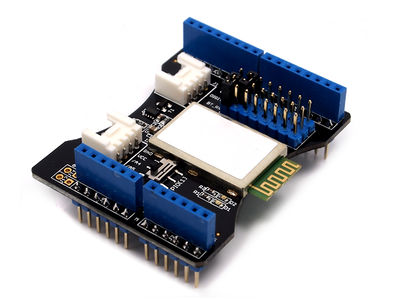
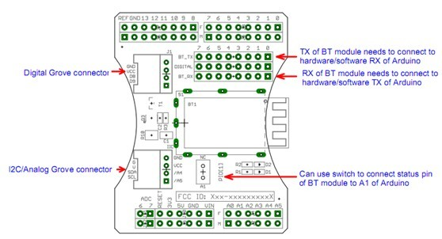

Questo shield permette ad Arduino e schede Arduino-compatibili, di comunicare via Bluetooth. E' possibile comunicare con il modulo Bluetooth attraverso la UART software scegliendo i pin da D0 a D7 o tramite la UART Hardware. Il modulo Bluetooth è un V2.0+EDR 3MBps. Utilizza un chip CSR Bluecore. Caratteristiche:

#include <SoftwareSerial.h> //Software Serial Port
#define RxD 7 // Se funziona si vede il led rosso accesso
#define TxD 6
#define DEBUG_ENABLED 1
SoftwareSerial blueToothSerial(RxD,TxD);
boolean enableComunication=false; // Flag che serve ad abilitare e disabilitare lo scambio di dati
String stringa=""; // stringa ricevuta via bluetooth
void setup()
{
Serial.begin(9600);
pinMode(RxD, INPUT);
pinMode(TxD, OUTPUT);
setupBlueToothConnection();
}
void loop()
{
char recvChar;
if(blueToothSerial.available()){ //check if there's any data sent from the remote bluetooth shield
recvChar = blueToothSerial.read();
Serial.println(recvChar);
}
}
void setupBlueToothConnection()
{
blueToothSerial.begin(38400); // Set BluetoothBee BaudRate to default baud rate 38400
blueToothSerial.print("\r\n+STWMOD=0\r\n"); // set the bluetooth work in slave mode
blueToothSerial.print("\r\n+STNA=ArduinoBluetooth\r\n"); // set the bluetooth name as "SeeedBTSlave"
blueToothSerial.print("\r\n+STOAUT=1\r\n"); // Permit Paired device to connect me
blueToothSerial.print("\r\n+STAUTO=0\r\n"); // Auto-connection should be forbidden here
delay(2000); // This delay is required.
blueToothSerial.print("\r\n+INQ=1\r\n"); // make the slave bluetooth inquirable
Serial.println("The slave bluetooth is inquirable!");
delay(2000); // This delay is required.
blueToothSerial.flush();
}